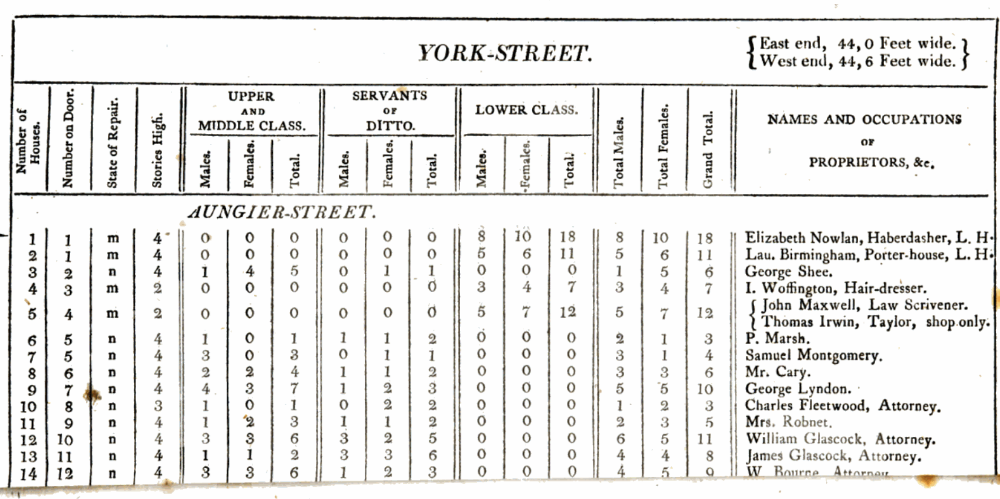

Rohan Alexander
Home
Events
Toronto Data Workshop
Colloquium on Applications of LLMs
Toronto Workshop on Reproducibility
Conference on statistical software
Teaching
Applications of LLMs
Data science foundations
Ethics and data science
Experimental design for data science
History of statistics and data sciences
Methods of Data Analysis I
Introduction to Modeling
Natural Language Processing
Surveys, sampling, and observational data
Worlds become data
Misc
Bookshelf
Blog
Recommendations
CV
Categories
All
(33)
What data science can learn from the James Webb Space Telescope
A talk at the Statistics and MachIne LEarning (SMILE) Journal Club.
Dec 17, 2021
Rohan Alexander

On the privilege of turning our world into data
A talk at the ‘Young Irish Statisticians’ group.
Dec 16, 2021
Rohan Alexander
The average age of politicians in the Australian Federal Parliament (1901-2021)
I examine the average age of politicians in the Australian Federal Parliament on a daily basis. Using a publicly available dataset I find that generally the Senate is older than the House of Representatives. The average age increased from Federation in 1901 through to 1949, when an expansion of the parliament’s size likely brought many new politicians. I am unable to explain a sustained decline that occurred during the 1970s. From the 1980s onward there has been a gradual aging of both houses.
Dec 2, 2021
Rohan Alexander
Review of ‘Data Science: A First Introduction’
A brief review of ‘Data Science: A First Introduction’ by Tiffany-Anne Timbers, Trevor Campbell, and Melissa Lee.
Nov 30, 2021
Rohan Alexander
Remarks at Trinity College
Introductory remarks delivered at Trinity College High Table panel on data science at the University of Toronto on 19 October 2021.
Oct 19, 2021
Rohan Alexander
Introduction to Andrew Gelman
Introductory remarks about Andrew Gelman delivered at the University of Toronto Data Sciences Institute (DSI) launch on 17 September 2021.
Sep 17, 2021
Rohan Alexander
Turning our world into data
A talk delivered at the Harvard Biostatistics Data Science in Action Summer Camp, 7 July 2021, organised by Jesse Gronsbell.
Jul 6, 2021
Rohan Alexander
Opportunities Provided by Open Data and Reproducibility
Some thoughts on getting started with open data and reproducibility. A talk delivered at the University of Toronto, Stellar Stats Workshop, 28 May 2021, organised by Gwen Eadie & Josh Speagle.
May 23, 2021
Rohan Alexander
On work-life balance
Some thoughts on work-life balance as a PhD student and junior faculty and how that changes over time. A talk delivered to the University of Toronto Faculty of Information ‘How to get a PhD’ session on work-life balance.
May 4, 2021
Rohan Alexander
In Appreciation of Greg Wilson
As he moves on from his role at R Studio Education, a few words of appreciation for Greg Wilson.
Mar 14, 2021
Rohan Alexander
Saturday morning thoughts on grad school applications
There’s a huge amount of luck involved. Worry as much, if not more, about letters and your personal statement as you do about your GPA. Have a clear reason for wanting to go to the school/program that you’re applying for and communicate that throughout your application.
Mar 13, 2021
Rohan Alexander
Shelter usage in Toronto (2017-2021)
I look at Toronto shelter usage numbers between 2017 and January 2021. I document and adjust for a systematic error in the 2017 data. The data show that homelessness in Toronto is a large problem; essentially all shelters are almost always full. COVID changed the nature of the problem by reducing the number of people using shelters, however they must be sleeping somewhere. I compare January 2021 with January 2020 and estimate that following COVID there are now around an additional 3,500 people sleeping somewhere outside of shelters, possibly outdoors.
Jan 24, 2021
Rohan Alexander
Getting started with MRP
Multi-level regression with post-stratification (MRP) is a popular way to adjust non-representative samples to better analyse opinion and other survey responses. I recently ran a hands-on workshop at the ANU, aimed at interested, but not experienced, social scientists to help de-mystify MRP. The workshop aimed to give participants the ability and confidence to: 1) critically read papers that use it; and 2) apply it in their own work. Examples of how to implement MRP were illustrated in R using the brms package. The following post gives the outline of the workshop and the material and coding exercises covered.
Dec 3, 2019
Rohan Alexander
Cleaning Hansard: The pay’s not great but the work is hard
Cleaning the Australian Hansard is mind-numbing, annoying and time-consuming, but someone has to do it.
Aug 13, 2018
Rohan Alexander
The SQL Is Never As Good As The Original
SQL is a popular way of working with data. Advanced users probably do a lot with it alone, but even just having a working knowledge of SQL has increased the number of datasets that I can get data from to then analyse with other tools such as R or Python. You can use SQL within RStudio if you want. The following are a few notes to help future-Rohan when he needs to use SQL. A worked example with a sample of the Hansard data will be included in a future post.
Jul 28, 2018
Rohan Alexander
Topic Modelling - Theory
Each statement in Hansard needs to be classified by its topic. Sometimes Hansard includes titles that make the topic clear. But not every statement has a title and the titles do not always define topics in a well-defined and consistent way. One way to get consistent estimates of the topics of each statement in Hansard is to use the latent Dirichlet allocation (LDA) method of Blei, Ng, Jordan,
@Blei2003latent
, as implemented by the R package ‘topicmodels’ by Grun
@Grun2011
.
Jun 29, 2018
Rohan Alexander
Getting started with LaTeX
LaTeX makes it easier to produce papers that look great, but it can be overwhelming at the start. These notes help you get up-and-running with LaTeX.
Sep 14, 2017
Rohan Alexander
Reproducing a Grattan Institute map
Blogdown is a package that allows you to make websites (not just blogs, notwithstanding its name) largely within R Studio. It builds on Hugo, which is a popular tool for making websites.
Aug 11, 2017
Rohan Alexander
Getting started with Blogdown
Blogdown is a package that allows you to make websites (not just blogs, notwithstanding its name) largely within R Studio. It builds on Hugo, which is a popular tool for making websites.
Jul 21, 2017
Rohan Alexander
Mapping the 2016 Australian Election Polling Place Results
The note that follows introduces Australia’s political system, and then details the process of downloading and merging first-preference votes by polling place, and then plotting it on an interactive map.
Jul 18, 2017
Rohan Alexander
Greitens Reports For Duty
Eric Greitens may be the Republican Übermensch. Rhodes Scholar, Navy SEAL officer, husband and father. He’s now the Republican candidate in the Missouri gubernatorial election. And one suspects that being a governor could just be a step for Greitens. While 2016 will always be the year that US politics descended to the gutter, it could also be the year that the next Republican president begins his political career.
Oct 15, 2016
Rohan Alexander
Professional Amateurs
Despite many unforced errors Hillary Clinton has won the Democratic nomination and polls suggest she will beat Donald Trump. But her campaign continues to make unforced errors. There was plenty of evidence of an amateur nature to what should be a professional campaign at a recent rally for Clinton’s running mate, Tim Kaine, in Grand Rapids, Michigan.
Sep 8, 2016
Rohan Alexander
Trump, Revisited
Donald Trump is an improved politician, but it’s unlikely to be enough. He has harnessed fervent anti-Clinton sentiment amongst Republicans. But he does not have time to build the coalitions usually needed to win a US presidential election.
Jul 17, 2016
Rohan Alexander
Broader Thinking Needed on the Australian Budget
The Treasury Secretary, and many others, bemoan the wasted years of the mining boom. Most agree that Australia should have more to show for what was the most significant boom since Federation. But the boom is over. And a fixation on budget surpluses means that we are missing an opportunity to make up for it. Australia’s credit rating is a strength that we should take advantage of. The Commonwealth should be borrowing to fund infrastructure investment.
Feb 3, 2016
Rohan Alexander
Notes and Photos From Iowa
Bernie Sanders seems quite reasonable for a revolutionary. An energetic man of 74, he spoke for an hour in Perry, Iowa, to a room of 300 from only a few lines of handwritten notes, and then fielded half an hour of questions. He does not have the same aura that surrounded, then, Senator Obama in his own Iowa battle with, then, Senator Clinton in 2008 say those who saw both. Instead, Sanders has preternatural calm.
Jan 14, 2016
Rohan Alexander
Prepare For Future Economic Crises Now
Few policymakers were prepared for the financial crisis of 2007-08. Until it hit, their focus was on more obvious threats to the economy, instead of such an unexpected event. Could this be because planning for unexpected economic events is not the explicit responsibility of any particular policy-maker? If so, this has to change.
Aug 31, 2015
Rohan Alexander
In Appreciation of Ronald Coase
Ronald Coase, one of the most influential economists of the twentieth century, passed away in 2013 aged 102. Reading his papers today, I wonder whether he’d have become an economist if he were making that decision now.
Dec 24, 2014
Rohan Alexander
I’ll Have What They’re Having
Some accuse the Rich White Males from San Francisco’s Bay Area of only making products for other Rich White Males. But that neglects the fact that what they want is sometimes also what the rest of us want.
Dec 17, 2014
Rohan Alexander
The Human Equation: An Interview With George Zachary
In an age when you can buy data-driven refrigerators and Moneyball is nominated for Academy Awards you may be surprised to hear there are investors who describe themselves as gut-driven. Frankly I thought such people would be too embarrassed to be out in public. Then I heard George Zachary talk.
Mar 19, 2014
Rohan Alexander
Final Shot At Ending Industrial Disputes
The industrial relations disputes that culminated in the shutdown of Qantas last year took more than nine months to make it through arbitration. Such lengthy delays have left many wondering if changes should be made to the processes that underpin this form of dispute resolution. The use of ‘final offer’ arbitration could be the small change that has a big effect, saving conflicted parties time, money and reputation.
Nov 28, 2012
Rohan Alexander, Ben O’Neill
Tournaments Could Drive R&D Effort
The government should use tournaments to stimulate research and development in Australia. They have been largely overlooked since the Cutler Review of Innovation, but when structured properly, they encourage out-standing achievement and promote creative destruction.
May 17, 2011
Rohan Alexander, Andrew Barnes
Plastic Policies
There is broad agreement that Australian plastic bag consumption should be reduced. To this end, recent South Australian legislation has banned certain types of plastic bags. But other states wishing to reduce their plastic bag consumption may find a tax rather than a ban the more appropriate policy instrument.
May 25, 2009
Rohan Alexander, Flavio Menezes
Home Buyers Will Be Hurt by Aid Plan
The Government’s First Home Saver Accounts policy, announced during the last federal election, is a promise that should never have been made. It will place upward pressure upon inflation and increase the potential for domestic financial turbulence. It will be the individuals that the policy is designed to help (young Australians with a still-insecure financial foundation) that will be most hurt in the long-run.
May 8, 2008
Rohan Alexander
No matching items